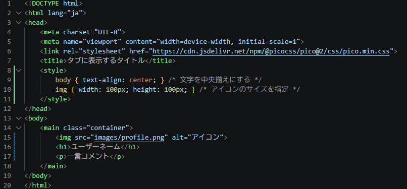

ファイルマネージャを開くことでもサイトの編集はできるが、VScodeで編集した方が簡単なので準備をしていく。
※サーバー名は簡単に変えられないので、変えたい場合は今がチャンス。
レイアウトは随時変えます

こんな感じで
事前に、サーバーパネル → ホームページ → Webフォント設定 からWebフォント設定を追加する。
その後、画像の様に記述。 フォントは以下のリンクに載っているものが使える。 https://www.xserver.ne.jp/functions/service_webfont_shotai.php 指定用の名前は以下のページの下部を参照。 https://www.xserver.ne.jp/manual/man_server_webfont_html.php
<!DOCTYPE html>
<html lang="ja" data-theme="light">
<head>
<meta charset="UTF-8">
<meta name="viewport" content="width=device-width, initial-scale=1">
<link rel="stylesheet" href="https://cdn.jsdelivr.net/npm/@picocss/pico@2/css/pico.min.css">
<script type="text/javascript" src="//webfonts.xserver.jp/js/xserver.js"></script>
<title>タブに表示されるタイトル</title>
<style>
:root {
--pico-font-family: "Take Bold", sans-serif; /* pico.cssはフォントが決められているので、rootから指定 */
}
画像のように書き換えよう 色は自分の好きなように
※背景を画像にする場合はコメントアウトされた方を使おう ※pico.cssの仕様で最後が本文（p）だと下の余白が多くなるのを止めてます
<style>
:root {
--pico-font-family: "Take Bold", sans-serif; /* pico.cssはフォントが決められているので、rootから指定 */
}
body {
min-height: 100vh; /* 最小の高さを画面全体にする */
padding-top: 3rem; /* 全体に余白を入れる */
background-color: cornsilk; /* 背景色を変える */
/* background-image: url("images/bg.jpg"); 背景画像を設定 */
text-align: center; /* 文字を中央揃えにする */
}
/* アイコン画像のスタイル */
.icon {
width: 6rem;
height: 6rem;
background-color: white; /* アイコンの背景色を変える（透過画像のみ） */
border-radius: 50%; /* アイコンを丸くする */
}
h1 {
padding: 1rem; /* ユーザーネームの周りに余白を入れる */
font-size: 1.2rem; /* ユーザーネームのフォントサイズを指定する */
}
article {
max-width: 500px; /* 最大幅を指定して広げる */
margin: 0 auto 1rem; /* 枠を中央に配置しつつ、下部に余白を入れる */
border-radius: 0.5rem; /* 枠の角を丸くする */
font-size: 1rem; /* フォントサイズを指定する */
}
/* article内の最後のp要素の下余白をなくす */
article p:last-child {
margin-bottom: 0;
}
</style>Bodyに自身が過去に作った制作物を入れていく 個人個人でいい感じに
<body>
<main class="container">
<!-- プロフィール部分 -->
<img src="images/profile.png" alt="アイコン" class="icon">
<h1>ユーザーネーム</h1>
<p>一言コメント</p> <!-- <br>で改行できる -->
<article style="background-color:burlywood;"> <!-- 色を変えられる -->
<p>制作物</p>
</article>
<article>
<p>画像タイトル</p>
<img src="images/gazou.jpg">
</article>
<article>
<p>動画タイトル</p>
<video src="images/douga.mp4" controls loop style="max-width: 100%"></video>
</article>
<article>
<p><a href="images/slide.pdf" target="_blank">PDFタイトル</a></p>
<iframe src="images/slide.pdf#view=Fit" width="100%" height="400rem"></iframe>
</article>
</main>
</body>
</html>新しくsecret.htmlファイルを作る。
内容はindex.htmlをコピペして、mainだけ書き換える。
途中の〇〇〇〇には他のネットワークシステム授業選択者のURLを、△△△△には氏名を入れる。
４人程度までリンクを載せておこう。
<body>
<main class="container">
<article style="background-color: burlywood;"> <!--背景色はお好みで-->
<p > リンク集 </p>
</article>
<article>
<a href="https://〇〇〇〇.xsrv.jp/"> △△△△ </a>
</article>
</main>
</body>index.htmlのmainの下に書き加える。 パスワードは各自で決める。 色はサイトの背景色と一致させよう。
</main>
<a href="secret.html"
onclick="const p = prompt('パスワードを入力してください'); if(p !== '自分で決めたパスワード') return false;"
style="color: 自分のサイトの背景色;">
隠し部屋
</a>
</body>
</html>⑤⑥で作成したパスワードロックはセキュリティが非常に低い！ パスワードを直接聞かずに、セキュリティの穴を見つけて他の人の隠し部屋にアクセスしよう。
まずはindex.htmlに張ったリンクのパスワードを外そう。 パスワードを聞くのはsecret.htmlを開いた後にする。
<a href="secret.php" style="color: cornsilk;">
隠し部屋
</a>secret.htmlのファイル名をsecret.phpにする。 htmlだとそのまま表示するだけだが、phpはサーバー内でプログラムを実行した結果が表示される。
といってもhtmlの内容をそのまま使えるので、とりあえずファイル名だけ変えておけばOK。 新しく作ったファイルは右クリックでuploadしよう。 元のsecret.htmlはサーバーに残ったままなので、削除しておく。
元々あったsecretの内容の真上に追加で記述する。 からまでは他のところからコピペして要らないところを消そう。
/ 以下元々あったsecretの内容 / ``
<?php >で囲んだ部分（if文の始めと終わりの二か所）はプログラムとして認識され、ページのソース表示では表示されない。
囲まれていないところはただのHTML扱い。
内に記述していく。
<body>
<main class="container">
<article>
<form method="post" action="secret.php"> <!-- POST方式でデータを隠して送り、自分自身に送信するフォーム -->
<label for="password">パスワードを入力してください:</label> <!-- 入力欄の見出し（説明文） -->
<input type="password" name="password" id="password" required> <!-- 入力枠。文字を隠し、PHPに名前を渡し、空送信を防ぐ -->
<?php if (isset($_POST['password'])): ?> <!-- もし送信ボタンが押されてデータが存在していたら（送信後だったら） -->
<p style="color: red;">パスワードが違います。</p>
<?php endif; ?>
<button type="submit">送信</button> <!-- 入力データをまとめて送信するボタン -->
</form>
</article>
</main>
</body>ただ書き写しただけでは身についたとは言えない！ 自分なりに文字列、数値をいじって自分だけの個人サイトを作ろう。 secret.phpは誰からも見られない（はず）なので、リンク集を残しておけば後は何をやってもOK。
※次回は口頭試問をします。